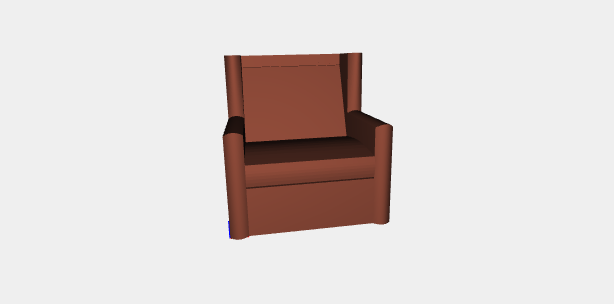

Sant Ambrogio armchair by Luigi Caccia Dominioni
The realization of this complex armchair is completely realized with NUBS and BEZIER plasm functions. The first main component is the armrest (bracciolo) realized with NUBS to which I passed the selector S0 and an array of data points. Because of NUBS does only an approximation of the curve, each point I wanted the curve to match exactly is repeated two times; so NUBS doesn't approximate. Then I passed nubs to BEZIER(S1) function and mapped to 3d domain.
var points11 = [[0,0,0],[0,0,7],[0,0,7],[0,5,7],[0,5,7],[0,5,12],[0,5,12],[0,8,12],[0,8,12],[0,8,0],[0,8,0],[0,0,0]] var knots11 = generateKnot(points11) var nubs11 = NUBS(S0)(2)(knots11)(points11); var curve11 = MAP(nubs11)(domain); var points12 = [[1,0,0],[1,0,7],[1,0,7],[1,5,7],[1,5,7],[1,5,12],[1,5,12],[1,8,12],[1,8,12],[1,8,0],[1,8,0],[1,0,0]] var knots12 = generateKnot(points12) var nubs12 = NUBS(S0)(2)(knots12)(points12); var curve12 = MAP(nubs12)(domain); var points13 = [[0.5,-0.5,0],[0.5,-0.5,7.5],[0.5,-0.5,7.5],[0.5,4.5,7.5],[0.5,4.5,7.5],[0.5,4,12],[0.5,4,12],[0.5,8,12],[0.5,8,12],[0.5,8,0],[0.5,8,0],[0.5,-0.5,0]] var knots13 = generateKnot(points13) var nubs13 = NUBS(S0)(2)(knots13)(points13); var curve13 = MAP(nubs13)(domain); var sur11 = BEZIER(S1)([nubs11,[0,6,6]]) var surface11 = MAP(sur11)(dom2d) var sur12 = BEZIER(S1)([nubs11,nubs13,nubs12]) var surface12 = MAP(sur12)(dom2d) var sur13 = BEZIER(S1)([nubs12,[1,6,6]]) var surface13 = MAP(sur13)(dom2d) var bracciolo= STRUCT([surface11,surface12,surface13])
The second main component is the backrest (schienale), realized again with NUBS and BEZIER. Here the points are all repeated two times because I need nubs matches exactly all the data points.
var points1 = [[0,0,0],[0,0,4.5],[0,0,4.5],[0,2,11],[0,2,11],[0,3,11],[0,3,11],[0,3,0],[0,3,0],[0,0,0]] var knots1 = generateKnot(points1) var nubss1 = NUBS(S0)(2)(knots1)(points1); var curves1 = MAP(nubss1)(domain); var points2 = [[7,0,0],[7,0,4.5],[7,0,4.5],[7,2,11],[7,2,11],[7,3,11],[7,3,11],[7,3,0],[7,3,0],[7,0,0]] var knots2 = generateKnot(points2) var nubss2 = NUBS(S0)(2)(knots2)(points2); var curves2 = MAP(nubss2)(domain); var surs12= BEZIER(S1)([nubss1,nubss2]) var surfaces12 = MAP(surs12)(dom2d)
The last main component is the pillow. The peculiarity of this component is it's curved on the back, on the front and on the top, to give it the appearance of a real comfotable pillow.
var pointcusc1 = [[0,0,0],[0,2.5,-0.4],[0,5,0],[0,5,0],[0,5.2,0.75],[0,5,1.5],[0,5,1.5],[0,2.5,1.9],[0,0,1.5],[0,0,1.5],[0,-0.2,0.75],[0,0,0]] var knotcusc1 = generateKnot(pointcusc1) var nubscusc1 = NUBS(S0)(2)(knotcusc1)(pointcusc1); var curvecusc1 = MAP(nubscusc1)(domain); var pointcusc2 = [[7,0,0],[7,2.5,-0.4],[7,5,0],[7,5,0],[7,5.2,0.75],[7,5,1.5],[7,5,1.5],[7,2.5,1.9],[7,0,1.5],[7,0,1.5],[7,-0.2,0.75],[7,0,0]] var knotcusc2 = generateKnot(pointcusc2) var nubscusc2 = NUBS(S0)(2)(knotcusc2)(pointcusc2); var curvecusc2 = MAP(nubscusc2)(domain); var surcusc1 = BEZIER(S1)([nubscusc1,nubscusc2]) var surfacecusc1 = MAP(surcusc1)(dom2d) var surcusc2 = BEZIER(S1)([nubscusc2,[7,2.5,0.75]]) var surfacecusc2 = MAP(surcusc2)(dom2d) var surcusc3 = BEZIER(S1)([nubscusc1,[0,2.5,0.75]]) var surfacecusc3 = MAP(surcusc3)(dom2d) var cuscino = S([1])([0.97])(STRUCT([surfacecusc1,surfacecusc2,surfacecusc3]))
Sant Ambrogio armchair original model
Results obtained in Javascript and Pyplasm
